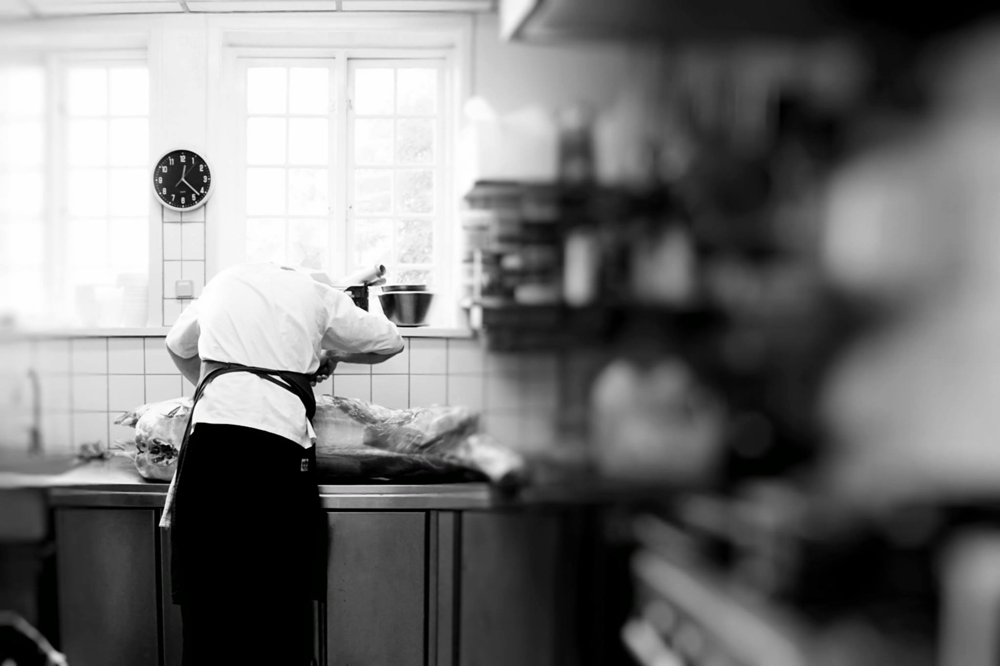

OM OS
Historien om Svalegaarden i Hasseris
I 1952 blev den smukke købmandsgård genopført på hjørnet af Thorsens Allé og Svalegårdsvej, og gården blev da også døbt Svalegaarden. Den idylliske gård står til stadighed på samme adresse, og har sat rammen for mange begivenheder og oplevelser gennem årene.
I juni 2016 fik Svalegaarden nye forpagterer med ny gejst og lysende håb for fremtiden - Mette og Stefan fra det tidligere Restaurant Mest.
Mette og Stefan kommer med nye kræfter til- og friske øjne på den smukke renoverede købmandsgård, som hidtil har fungeret som selskabsforretning.
